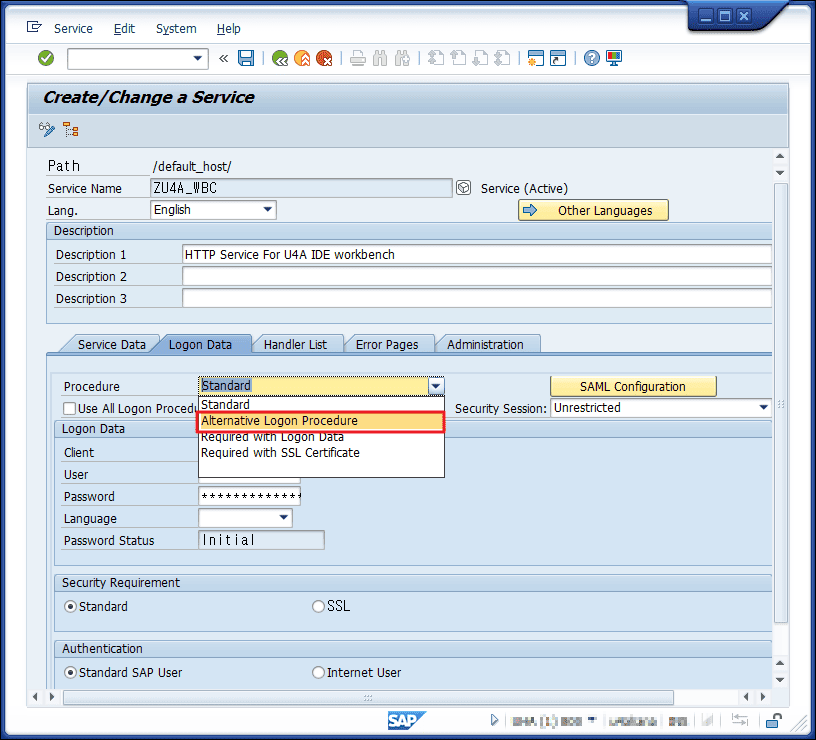

U4A Workspace(WS) Login Error Troubleshooting Manual
Check the host information of the connected server
1. Check the server connection information in Workspace
2. Refer to the registered connection information and access services such as Webgui in the browser
Example)
Registered connection information
- Protocol: "https"
- Host: "sapdevap.u4a.com"
- Port: "44300"
- Execution URL:
https://sapdevap.u4a.com:44300/sap/bc/gui/sap/its/webgui
Check if SSO (SAML2.0) is applied to the target server
1. Log in to the target server via SAPGUI and enter T-CODE: "SICF" to access the "Definition Service" screen
2. Enter "ZU4A_WBC" in the "Service Name" field and execute
3. On the result screen, double-click the "ZU4A_WBC" service
4. On the "Create/Change Service" screen, select the "Logon Data" tab and then click the "Change" button at the top
5. After all input fields are enabled, select "Alternative Logon Procedure" from the "Procedure" dropdown

6. At the bottom of the screen, check if "SAML Logon" exists in the "Logon Procedure List" section
7. If it needs to be deleted, follow the steps shown in the image below to remove it

8. Restart U4A Workspace and try logging in again
Warning
We are not responsible for any errors or issues caused by changes or arbitrary actions not covered in this guide.
Also, problems resulting from modifications to system files, settings, components, or the use of external tools without prior approval from us will not be supported.
For stable use, please follow the procedures specified in this guide.
If the issue persists after checking and action
If the problem continues after checking and performing the above actions, please contact the U4A R&D team.